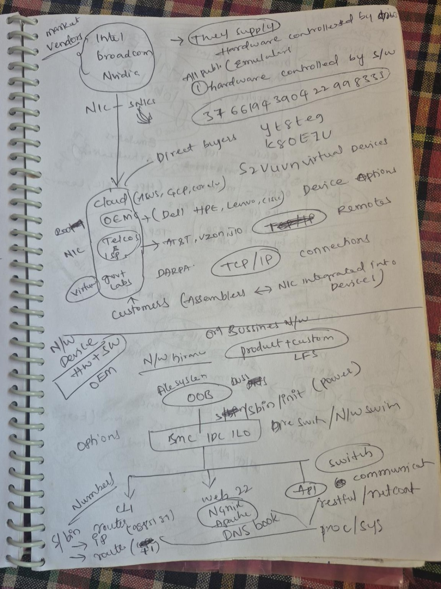
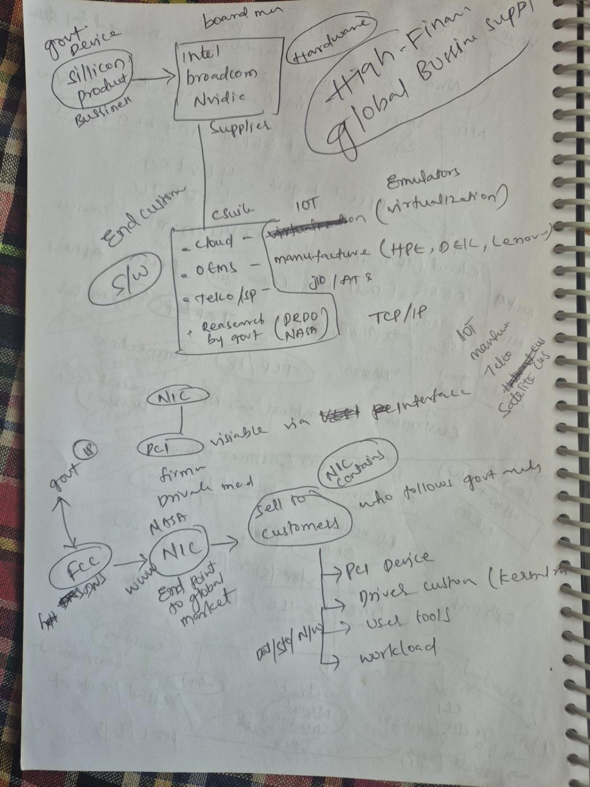
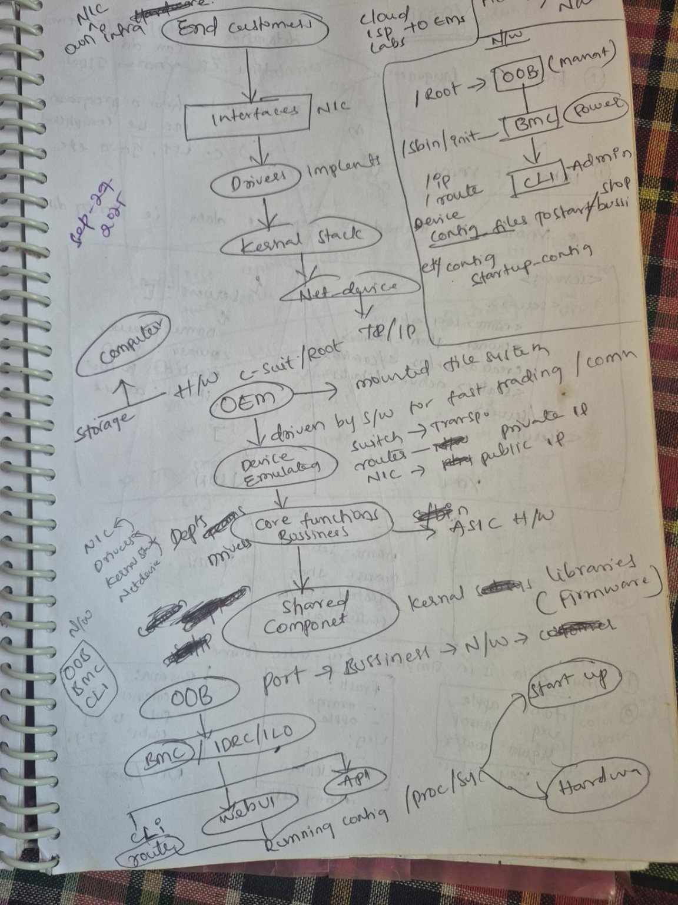

🔌 From silicon to a working NIC
Provenance: V1 Research Edition (110.8 MB baseline); Industry Evolution Edition (63.1 MB)
Related in the master index: 5 chapters
A research library, not a summary feed
The Aravind Systems Atlas gathers the author's systems research into one library: how signals became silicon, how silicon became working systems, how networks grew, and how institutions, markets and industries grew around them. Every chapter keeps its provenance labels, so you can always tell what is an original note, what is a derived summary, and what is still unverified.
Research edition · Release v1-consolidated-001 · Version 1.0.0-continuing · 57 chapters · 136 images · 22 diagrams · 48 tables · SHA-256 970489efd3899d29
Browse all 57 chapters Start a learning path Preview relationships
Real chapters from the verified master index — no featured title here is invented, and no count is estimated.
Provenance: V1 Research Edition (110.8 MB baseline); Industry Evolution Edition (63.1 MB)
Related in the master index: 5 chapters
Provenance: V1 Research Edition (110.8 MB baseline); Industry Evolution Edition (63.1 MB)
Related in the master index: 5 chapters
Provenance: V1 Research Edition (110.8 MB baseline); Industry Evolution Edition (63.1 MB)
Related in the master index: 5 chapters
Provenance: V1 Research Edition (110.8 MB baseline); Industry Evolution Edition (63.1 MB)
Related in the master index: 5 chapters
Provenance: V1 Research Edition (110.8 MB baseline); Industry Evolution Edition (63.1 MB)
Related chapters: none recorded in the master index
Provenance: Industry Evolution Edition (63.1 MB)
Related chapters: none recorded in the master index
These five domains are the verified grouping of the consolidated master (57 chapters). Counts below are counted from the master index, not estimated.
Silicon, processors, memory and the machines they become.
Networks, operating systems, virtualisation and operations.
Institutions, standards, markets and the supply chain.
Industry evolution, business models and global stacks.
How systems, interfaces and knowledge themselves evolved.
Proposed, pending owner approval. The seven groupings below come from the forward product proposal. They are not the verified master grouping, and no chapters have been mapped to them yet. Until the owner approves a verified re-mapping pass, the five master domains above remain the authoritative grouping.
Processors, silicon, memory and machines.
Proposed grouping — pending owner approval. No chapter mapping has been assigned yet; mapping is a separate verified pass, so no chapter count is shown here.
How things connect and how they are run.
Proposed grouping — pending owner approval. No chapter mapping has been assigned yet; mapping is a separate verified pass, so no chapter count is shown here.
How systems changed over time.
Proposed grouping — pending owner approval. No chapter mapping has been assigned yet; mapping is a separate verified pass, so no chapter count is shown here.
Where systems are used, and how sectors changed.
Proposed grouping — pending owner approval. No chapter mapping has been assigned yet; mapping is a separate verified pass, so no chapter count is shown here.
How organisations build and run technology.
Proposed grouping — pending owner approval. No chapter mapping has been assigned yet; mapping is a separate verified pass, so no chapter count is shown here.
Markets, integration and the distribution of control.
Proposed grouping — pending owner approval. No chapter mapping has been assigned yet; mapping is a separate verified pass, so no chapter count is shown here.
Shared foundations, open source and private ecosystems.
Proposed grouping — pending owner approval. No chapter mapping has been assigned yet; mapping is a separate verified pass, so no chapter count is shown here.
Sequences of real chapters. Path names are navigation labels only — they are never presented as chapters, and no mockup title is used as a chapter title.
Entry-point sequence, not a chapter. Each step is a real chapter from the master index.
Entry-point sequence, not a chapter. Each step is a real chapter from the master index.
Entry-point sequence, not a chapter. Each step is a real chapter from the master index.
Chapters tracing change over time: from merchant networks to AI-era ecosystems, and from early switching to the global digital industry stack.
Provenance: Industry Evolution Edition (63.1 MB)
Related chapters: none recorded in the master index
Provenance: Industry Evolution Edition (63.1 MB)
Related in the master index: 3 chapters
Provenance: Industry Evolution Edition (63.1 MB)
Related in the master index: 3 chapters
Provenance: Industry Evolution Edition (63.1 MB)
Related chapters: none recorded in the master index
Provenance: Industry Evolution Edition (63.1 MB)
Related in the master index: 7 chapters
Provenance: Industry Evolution Edition (63.1 MB)
Related chapters: none recorded in the master index
Six chapters in the master index each list the other five as related chapters. That is a verified, closed cluster — drawn here exactly as recorded, with no added links:
Open the System Explorer preview — the full interactive explorer is a later work package.
The Atlas is built from the author's own research notes and two source editions: the V1 Research Edition baseline and the Industry Evolution Edition. Original-note scans are preserved as submitted — handwriting, arrows, corrections and margins included — and are shown as originals, not redrawn. Where a chapter's exact transcription is not independently verified, the chapter says so; editorial summaries are labelled as editorial, not as verbatim transcription.
Sample original-note scans from “From silicon to a working NIC” (local copies, byte-identical to the content archive; see the provenance note on Sources):



Research edition · Release v1-consolidated-001 · Version 1.0.0-continuing · 57 chapters · 136 images · 22 diagrams · 48 tables · SHA-256 970489efd3899d29
Status: research-edition. This is a continuing release (1.0.0-continuing), not a finished, final edition — corrections and additions are expected, and each release carries its own identifier so readers can tell which version they read. Three navigation pages and 22 duplicate-title teasers from the source editions were excluded from the 57-chapter count and are recorded in the release manifest; they are not silently dropped chapters.
Missing information is shown as missing on this site: a chapter with no recorded images shows “0 images recorded”, and a field the master does not record is labelled “not recorded” rather than filled in.